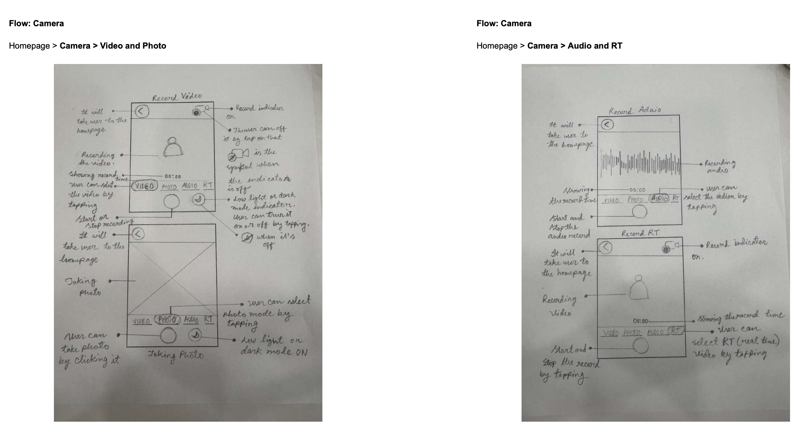
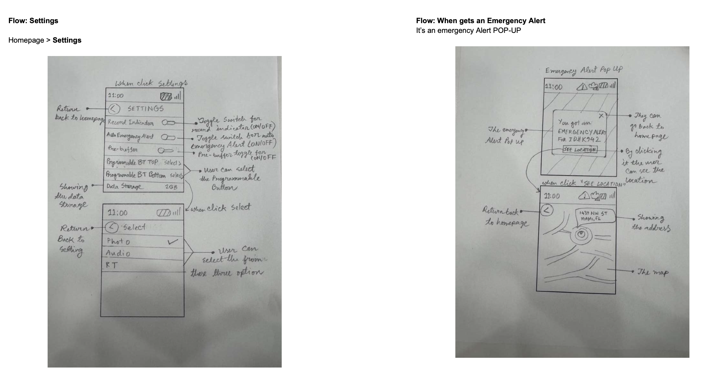
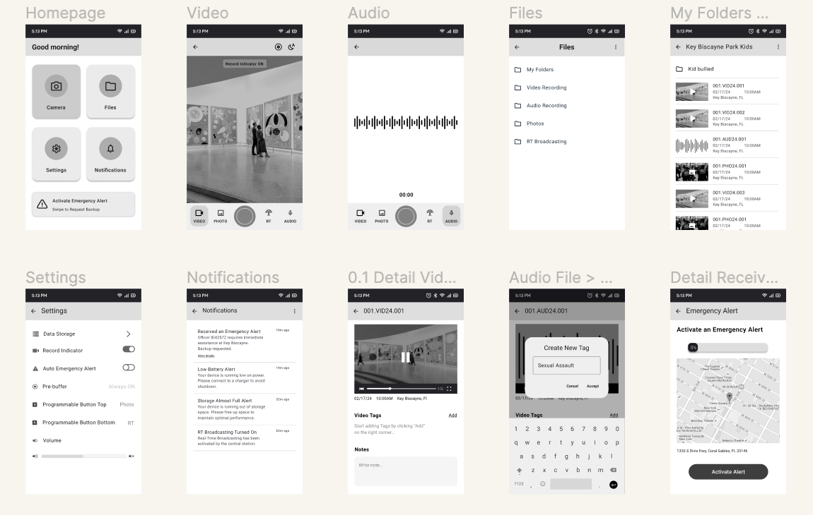
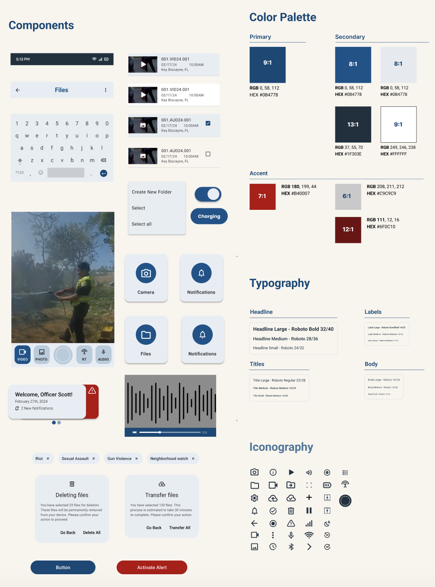
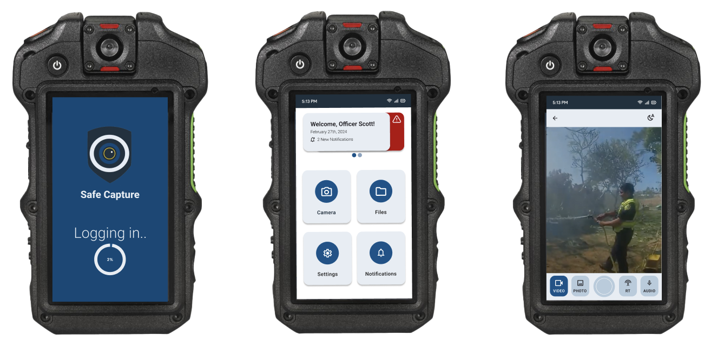
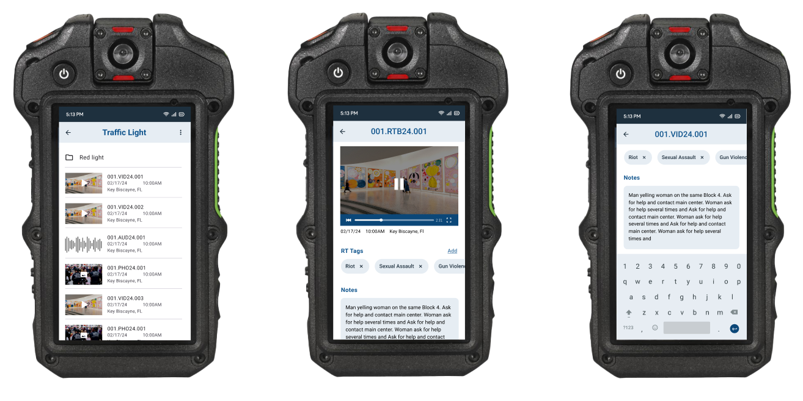
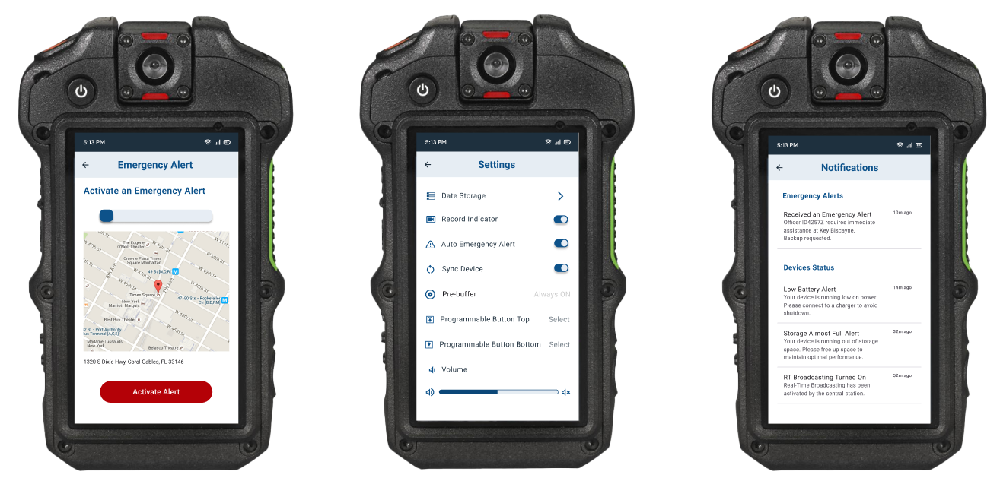

Safe Capture
Project Context
-
Safe capture is an interactive mobile application for public safety body worn camera. The project goal is to create a user-friendly and efficient mobile application that enhances the functionality and usability of body-worn cameras used in public safety scenarios.
-
Role
Time
UX reasearcher and designer
Jan 2024 - Feb 2024
Teammate
Tools
Paulina Sarzosa
Figma, Photoshop
-
Background
Design and develop an interactive application for public safety body worn cameras which are mostly used by local and state law enforcement agencies (Police First Responder/ Frontline, Highway Patrol, Correction Officers). The application should have the following features- capture: videos, photos, voice notes, pre-buffering event capture, system/device notifications, media tagging and integrated metadata, media access and management, RT broadcasting- to offering enhanced usability that guarantees public safety and transparency.
Research
-
This project is focusing on external secondary research which involves gathering related information and insights from newspaper articles, research journals, case studies, open data repositories, internet searches, info from govt. sources, etc. The following research questions are being addressed during the secondary research:
-
Research Questions
- What is BWC (Body worn camera)?
- Who are the users? Why they use it?
- When and where the BWC has been usually used?
- What are the advantages of using BWCs?
- What are the drawbacks of using BWCs?
- What are the technical features of BWCs?
- What are the tasks to be performed by BWCs?
- What are different kinds of BWC currently existing? How are the technical features and performance?
- What are challenges using wearable devices like BWC?
-
BWC (Body worn camera)
A body worn camera, often known as BWC, is a compact, lightweight video and audio recording wearable device, typically worn by law enforcement officers or other professionals whose jobs require them to interact with the public. This small portable camera has a microphone to capture sound and internal data storage to save video footage for later review and the camera is typically attached to law enforcement officer’s chest or head. According to the Bureau of Justice Assistance, “the video and audio recordings from BWCs (body-worn cameras) can be used by law enforcement to demonstrate transparency to their communities; to document statements, observations, behaviors, and other evidence; and to deter unprofessional, illegal, and inappropriate behaviors by both law enforcement and the public”

-
Capturing videos, photos, voice notes: The device's capability to record high-quality video footage, capture still images, and capture audio notes during law enforcement or security-related activities.
-
Pre-buffering event capture: Pre-buffering captures video up to 60 secs prior to a recording trigger.
-
System/device notifications: The device provides alerts and notifications to the user based on various system events or conditions.
-
Media tagging and integrated metadata: It allow users to attach tags or labels to recorded media, or categorizing content based on factors such as incidents, individuals’ involvement and integrated metadata includes accurate timestamps and other important information about the recorded media.
-
Media access and management: It allows users to efficiently access, organize, and manage the recorded media, including videos, photos, and audio, captured by the BWC.
-
RT broadcasting: User can live streaming the audio and video content from the camera in real-time.
Understanding the Technical Features

-
Design Precedents
Emerging technologies like body worn camera are changing the way we may gather information about social involvement and activity. Body-worn cameras provide officers with a reliable and compact tool to systematically and automatically record their field observations and encounters which includes interactions with victims, witnesses, and others during police-public encounters; arrests; and critical incidents. Since the using BCW’s has a conflicting response, while designing the interactive application for BWCs it is very important to understand the users (law enforcement agencies) needs and also consider the public privacy. The challenges like technical and ethical, wearable devices as addressed above through the development of an interactive application for public safety BWCs is crucial to optimize their effectiveness, improve officer workflows, and ensure compliance with regulatory standards. The design should prioritize wearable device usability, eliminate the existing system’s drawbacks, integrate with public privacy and data security, and the seamless coordination of BWCs within the broader law enforcement ecosystem.
Design Process
Based on the information collected from the secondary research, I built a concept map for a body-worn camera project that encapsulates the various components and relationships central to the design. At its core, the concept map visualizes key elements which covers user interaction, focusing on the ease of use, training, and support for public safety personnel and camera’s technical features which includes data management, security features, and it’s also focusing on specification of wearable devices.

Ideation
-
Sketches
In the ideation process we were developing, and refining ideas to address the user's needs and create an effective and delightful user experience that solves our users problem more effectively. Designing a new and innovative solution required us to brainstorm not only the design but how we would introduce this new flow to users. We explored different solutions and sketched out the user flows.
- 
- 
Digital Wireframes
-
As the initial design phase continued, we made sure to base screen designs on findings from the user research. Using the completed set of digital wireframes, then we created a low-fidelity prototype, so the prototype could be used in a usability study.
- 
We conducted rounds of usability studies. Findings from the prototype testing helped us to guide the designs from wireframes to mockups. The testing study revealed what aspects of the mockups needed refining. Here are all the findings we got from usability studies:
1
Slides swipeable and clickableThe homepage now offers both swipe and click options for user interaction, providing greater flexibility and ease of activation.
2
Tag for filesUsers have expressed that the swipeable option in the file tags wasn't very clear. They suggest adding a sneak peek of the third one so it's more apparent that it's swipeable."
3
Make the Emergency noticeable with active statusIn the Emergency Tab, change the color from blue to red and for the active emergency alert changing the color dark red .
4
Change the top bar informationChange the information in the homepage box for more coherent or relatable to the duties like officer's name, date and new notification
5
“Add Files” OptionA new "Move To" functionality has been introduced, allowing users to customize their folders by adding files to "My Folders."
6
Add "Sync Device" OptionA new "Sync Device" functionality has been introduced, allowing users to sync their device to companion app.
Style Sheet
- 
Final Design
-
Our final design encompassed the opportunity areas – easy emergency alert sent, ensure public safety with record indicator light and structured media managment-for our users. We updated our top hompage bar with more relatable information, ddd "Sync Device" option, change the color for active emergency alert status and add new "Move To" functionality to the interface.
- 
- 
- 
Reflection
-
Impact
We try to give our users an efficient way to navigate the files which is one of the tricky part in the interfaces, since it has four different kinds of files-video, audio, RT and photos. So, we discuss together and find a better way to laying out it so that our users can easily navigate and can see the media tag, and also can add a note.
-
What I learned
The biggest challenge for designing the body worn camera interfaces is the screen size and trying to put less stuff on screen, so that the user doesn’t have any difficulty to understanding the flow. Since it is limited screen size, we really try not to put things much closer and try to give space between incons and feature so that users can easily tap or navigate.